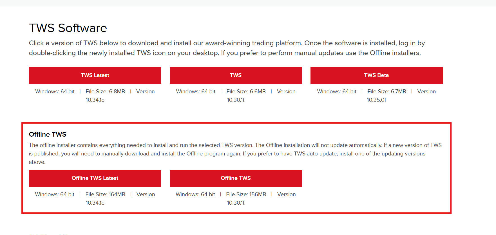

In order to use the TWS API, all customers must install either Trader Workstation or IB Gateway to connect the API to. Both downloads maintain the same level of usage and support; however, they both have equal benefits. For example, IB Gateway will be less resource intensive as there is no UI; however, the Trader Workstation has access all of the same information as the API, if users would like an interface to confirm data.
Download Trader Workstation Download IB Gateway
It is recommended for API users to use offline TWS because TWS online version has automatic update. Please use same TWS version to make sure the TWS version and TWS API version are synced. These will help preventing version conflict issue.
